Excel
¿Qué es una hoja de cálculo?
Una hoja de cálculo es un programa que se utiliza para realizar operaciones
matemáticas a todos los niveles. Consiste en una serie de datos distribuidos en celdas
dispuestas por filas y columnas. Estos datos pueden ser de varios tipos
y son capaces de relacionarse unos con otros para la resolución final del cálculo.
En principio, una hoja de cálculo pretende sustituir a la clásica hoja de papel en la
que se realizan operaciones aritméticas y otras operaciones matemáticas más complejas. La
hoja de cálculo combina las capacidades de cómputo de la máquina con sus funciones de
interrelación de los datos y permite conferirlas una buena presentación
¿Qué es Excel?
Microsoft Excel es una aplicación del tipo hoja de cálculo que forma parte del paquete Microsoft Office y se utiliza
para calcular, analizar y gestionar datos. A través de ella, podemos realizar diversas operaciones, desde las
más sencillas, como sumar y restar, hasta otras complejas, por medio de funciones y fórmulas. También permite
elaborar distintos tipos de gráficos para analizar y comprender los resultado de dichas operaciones.
Proporciona herramientas y funciones eficaces destinadas a analizar, compartir y
administrar datos con facilidad.
Las funciones, los filtros y las tablas dinámicas nos brindarán la
posibilidad de resumir, analizar, explorar y
presentar datos para, luego, tomar decisiones. Con las macros es posible
optimizar los procesos rutinarios
Con respecto a Excel, se puede decir que además incorpora otras posibilidades que
la hacen más potente, como la incorporación de imágenes, representaciones de datos
matemáticos mediante gráficos e intercambio de información con otros programas de Windows
(como Word, Access, etc.).
La ventana de Excel
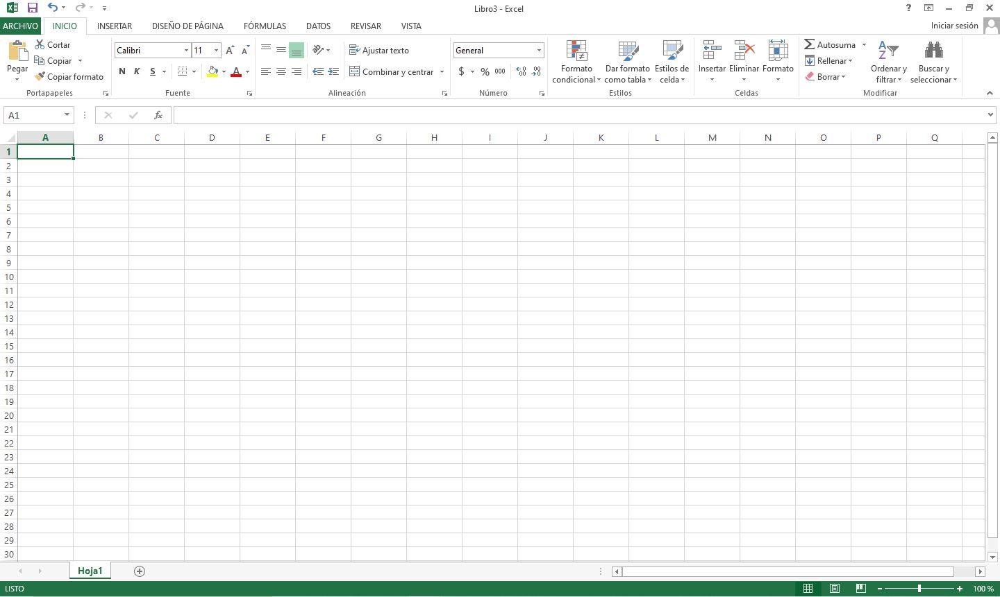
Pestaña Archivo:
Contiene las opciones principales para trabajar con el documento
completo (Abrir, Guardar,Imprimir, etc.).Barra de herramientas de acceso rápido:
Contiene botones con las funciones más
utilizadas. Podemos añadir y eliminar los botones que deseemos a esta barra.Cinta de opciones:
Contiene botones con las funciones del programa organizadas
por pestañas. Al pulsar sobre los botones, las tareas que tengan asociadas entran en
funcionamiento. Haciendo clic en las pestañas se cambia de cinta para acceder a
otros botones y, por tanto, a otras funciones.Grupos:
Reúnen botones cuyas funciones pertenecen a un mismo tipo de trabajo.Celdas:
Son las encargadas de albergar los datos de Excel. En ellas se escriben
rótulos de texto, datos numéricos, fórmulas, funciones, etc.Celda activa:
Es la celda seleccionadaEncabezado de filas/columnas:
Los encabezados indican la numeración de las filas y
columnas. También tienen otras funciones como seleccionar filas o columnas
completas (haciendo clic en una) y ampliar o reducir la altura y anchura de las
celdas (haciendo clic entre dos y arrastrando). Las columnas se identifican con una letra,
desde la A hasta la XFD, mientras que las filas se identifican con números, desde 1 hasta 1.048.576.Área de trabajo:
Está formada por filas y columnas. Aquí ingresamos los datos y vemos el
resultado de las operaciones.Posición actual del cursor:
Indica dónde se encuentra el usuario en cada momento.
Al introducir datos en Excel irán a parar a esa celda.Barras de desplazamiento:
Una horizontal y otra vertical, que nos permiten desplazarnos por
la hoja de cálculo.Barra de estado:
Muestra información complementaria del programa según se
suceden las diferentes situaciones de trabajo.La barra de fórmulas:
Nos muestra el contenido de la celda activa, es decir, la casilla
donde estamos situados. Cuando vayamos a modificar el contenido de la celda, dicha barra variará
ligeramente, pero esto lo estudiaremos más adelante.Etiquetas de hojas:
Se emplean para acceder a las distintas hojas del libro de
trabajo. Se hace clic en una para acceder a su contenido. Como se va a ver, cada
hoja del libro ofrece una tabla de celdas que están distribuidas en filas y columnas
numeradas: las filas de forma numérica (1, 2, 3, etc.) y las columnas de forma
alfabética (a, b, c, etc.).
La cinta de opciones
La cinta de opciones es uno de los elementos más importantes de Excel, ya que contiene todas
las opciones del programa organizadas en pestañas. Al pulsar sobre una pestaña,
accedemos a la ficha.
Las fichas principales son Inicio, Insertar, Diseño de página, Fórmulas,
Datos, Revisar y Vista. En ellas se encuentran los distintos botones
con las opciones disponibles. Pero además, cuando trabajamos con determinados elementos,
aparecen otras de forma puntual: las fichas de herramientas.
Por ejemplo, mientras tengamos
seleccionado un gráfico, dispondremos de la ficha Herramientas de gráficos, que nos ofrecerá
botones especializados para realizar modificaciones en los gráficos.
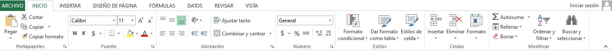
Cuando se pulsa la tecla ALT aparecen varias letras resaltadas superpuestas a las
pestañas y elementos de la cinta, al pulsar la tecla de esa letra se activa la pestaña, momento
en el cual aparecerán más letras o números, incluso a pares, que al ser pulsadas activarán la
función correspondiente. Por ejemplo, si se pulsa ALT y luego las teclas O (letra o) y 1
(número uno) se activa la letra Negrita.
Observación: Los atajos antiguos siguen estando vigentes,
por ejemplo, también puede activar y desactivar la negrita pulsando CONTROL+N como
siempre.
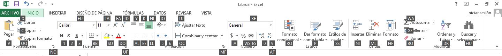
Observación: Si haces doble clic sobre cualquiera de las pestañas, la barra se ocultará, para
disponer de más espacio de trabajo. Las opciones volverán a mostrarse en el momento en el que vuelvas
a hacer clic en cualquier pestaña. También puedes mostrar u ocultar las cintas desde el botón con
forma de flecha, que encontrarás en la zona derecha superior
Personalizar la cinta de opciones
Desde la versión 2010 la cinta de opciones puede modificarse, si bien existen
algunas limitaciones. Para acceder a la función que permite realizar estos cambios, se recurre a la
pestaña Archivo y seleccionar Opciones. En la ventana que aparece, nos decantamos por la
categoría Personalizar cinta de opciones.
Básicamente
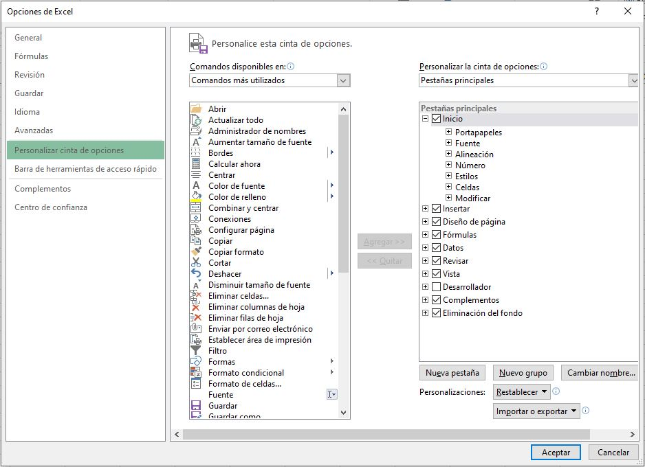
Básicamente se dispone de dos columnas para la tarea. La izquierda muestra
aquello que se puede incorporar a la cinta, mientras que la derecha muestra lo que la cinta
ya contiene. Entre ellas, se pueden ver los botones 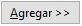 y
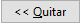 que permiten
el intercambio de botones y funciones en la cinta.
Se empieza inspeccionando la columna derecha. Si existen funciones que desea
quitar de la cinta, seleccione una y pulse el botón
.
Observaciones:
-
Tenga en cuenta que en las pestañas originales no se pueden quitar botones aislados, sino grupos enteros de ellos. Por
ejemplo, en la figura anterior puede ver que la pestaña Inicio contiene varios grupos:
Portapapeles, Fuente, Párrafo, etc. Aunque puede desplegar estos grupos para ver las
funciones que contienen, éstas no pueden quitarse solas, sino que han de ser retiradas en
grupo. Así, podrá quitar, por ejemplo, el grupo Párrafo completo.
- Esto último sólo se aplica a los grupos y pestañas originales del programa. Si se
trata de grupos o pestañas creados por nosotros, podremos quitar sus elementos con
independencia de los demás. Tampoco podremos agregar funciones a los grupos y pestañas originales, sino a los
que son personalizados o, lo que es lo mismo, los que agreguemos nosotros a la cinta.
Personalizaciones
- Para agregar una nueva pestaña, se dispone del botón
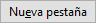 bajo la
columna derecha. Al pulsarlo, la nueva pestaña aparece detrás de aquella en la que
nos encontremos y el sistema espera a que le se la dé un nombre.
-
Dentro de una pestaña se pueden añadir grupos mediante el botón
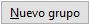 .
También se deberá dar nombre al grupo.
-
Si éste es incorrecto, podremos cambiarlo pulsando el botón
 .
.
-
Una vez que se dispone de un grupo, se le pueden agregar botones seleccionando
las funciones una a una en la columna izquierda y pulsando el botón
.
-
Tanto para quitar grupos como pestañas, debe seleccionarse uno y pulsarse el
botón .
-
Puede limpiar la cinta dejándola como estaba originalmente desplegando la lista
y seleccionando Restablecer todas las personalizaciones. En esta
misma lista puede optar por Restablecer únicamente la pestaña de cinta
seleccionada para restaurar sólo la pestaña que haya elegido en la lista de la
columna derecha.
-
Puede guardar en el disco la cinta de opciones tal como se encuentre (incluyendo
nuevas pestañas, grupos, etc.), desplegando la lista
y seleccionando
Exportar todas las personalizaciones. Esto lleva a un cuadro de diálogo en el
que se selecciona la carpeta y el disco en el que se guardará el archivo con la
información (al que también habrá que dar nombre). En la misma lista se dispone
de la opción Importar archivo de personalización para abrir uno exportado
anteriormente. Esto es útil cuando se necesita instalar el programa en otro equipo y
se desea configurar rápidamente la cinta de opciones.
Conceptos básicos de Excel
Libro de trabajo
Un libro de trabajo es el archivo que creamos con Excel, es decir, todo lo que hacemos en este programa
se almacenará formando el libro de trabajo. Los libros de trabajo de Excel tienen la extensión .XLSX para que
el ordenador los reconozca como tal.
Cuando se inicia una sesión de Excel automáticamente se abre un nuevo libro
de trabajo con el nombre provisional de Libro1. Esto lo puedes comprobar en la pantalla de Excel: en la barra de
título de la parte superior de la ventana verás como pone Libro1 - Excel.
Cada vez que empezamos un nuevo trabajo con Excel el número del libro irá variando dependiendo de cuántos se hayan
creado en esta sesión. Así, si empezamos otro trabajo, el nombre que se asigna será Libro2, el siguiente Libro3,
y así sucesivamente.
Observación: Nótese que el nombre asignado sólo sirve como referencia para identificar los trabajos mientras
no se hayan guardado. En ningún caso significa que el archivo ya se encuentra guardado. Un libro de trabajo está
formado por una o varias hojas. En principio constará sólo de 1 hoja aunque el número de éstas puede variar entre 1
y un número bastante alto, limitado por la cantidad de memoria disponible. Si miras en la parte inferior de la
ventana de Excel encontrarás las diferentes hojas del libro de trabajo. Cada una de ellas, según se vayan agregando,
serán nombradas de la forma Hoja1, Hoja2...
Hojas de cálculo
La hoja de cálculo es uno de los distintos tipos de hojas que puede contener un libro de trabajo. Es una herramienta
muy útil permite trabajar con gran cantidad de números y realizar cálculos u operaciones con ellos.
Las hojas de cálculo están formadas por columnas y filas. Es como una gran hoja cuadriculada formada por 16,384 columnas y
1,048,576 filas.
Columnas
Una columna es el conjunto de celdas seleccionadas verticalmente. Cada columna se nombra por letras,
por ejemplo A, B, C,.......AA, AB,........IV.
Filas
Cada fila se numera desde 1 hasta 1.048.576 y es la selección horizontal de un conjunto de celdas de una hoja de datos.
Celdas
La intersección de una columna y una fila se denomina Celda y se nombra con el nombre de la columna a la que
pertenece y a continuación el número de su fila, por ejemplo la primera celda pertenece a la columna A y la fila 1;
por lo tanto,la celda se llama A1.
Hacemos referencia a una celda por su dirección (coordenada), que se encuentra integrada por la letra de
la columna seguida por el número de fila a la que pertenece; por ejemplo, la celda B7 corresponde a la
intersección de la columna B y la fila 7 y la celda D15, a la intersección de la columna D y la fila 15.
En estas
celdas es posible ingresar diferentes tipos de datos (texto, números, fechas o fórmulas y funciones) que usen valores
existentes en otras celdas para efectuar un cálculo determinado.
Cuando el cursor está posicionado en alguna celda preparado para trabajar con ésta, dicha celda se denomina Celda activa
y se identifica porque aparece más remarcada que las demás. De igual forma tenemos la fila activa, fila donde se encuentra la
celda activa, y columna activa, columna de la celda activa.
Rango
En una hoja de cálculo el Rango, que es un bloque rectangular de una o más celdas que Excel trata como una unidad.
Los rangos son vitales en la Hoja de Cálculo, ya que todo tipo de operaciones se realizan a base de rangos.
Desplazamiento por las hojas de calculo
Para moverse a través de las celdas de una hoja de cálculo, se emplean ciertas
teclas cuya finalidad ha sido siempre la misma para cualquier tipo de programa:
| Teclado |
Movimiento |
| 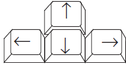 |
Los cursores le permitirán desplazarse a celdas contiguas. Por
ejemplo, pulse la tecla cursor derecha (->) para acceder a la celda
que haya a la derecha de aquélla en la que se encuentre. |
| 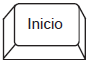 |
La tecla INICIO lleva a la primera columna de la fila en la que se
encuentre el cursor en ese instante |
| 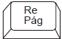 |
La tecla RE PÁG lleva unas cuantas filas de celdas hacia arriba (el número
de filas que quepan en la ventana de Excel). |
| 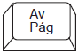 |
La tecla AV PÁG lleva unas cuantas filas de celdas hacia abajo (el número
de filas que quepan en la ventana de Excel). |
| 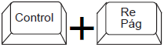 |
Las teclas CONTROL + RE PAG llevan a la hoja de cálculo anterior
dentro del libro actual. |
| 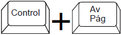 |
Las teclas CONTROL + AV PAG llevan a la siguiente hoja de
cálculo dentro del libro actual. |
| 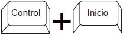 |
Las teclas CONTROL + INICIO nos llevan al principio de la hoja
de cálculo (celda A1). |
| 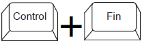 |
Las teclas CONTROL + FIN nos llevan al final de la hoja de cálculo.
Para ello, se desplazará hasta situarse en la última columna y fila que
posean datos. |
Observación: Otra forma rápida de moverse por la hoja cuando se conoce con seguridad la celda
donde se desea ir es escribir su nombre de columna y fila en el cuadro de nombres a la izquierda
de la barra de fórmulas:
Administrar las hojas del libro
Es fundamental para mantener la claridad en nuestros libros de Excel saber administrar de una forma correcta las hojas
(o páginas) que componen el libro.
Cambiar el nombre a las hojas
Esto se puede hacer de dos maneras:
- Pulsando con el botón secundario (botón derecho para las personas diestras) sobre la pestaña
y a continuación
pulsando en cambiar nombre:
- Directamente haciendo doble click en el nombre actual de la hoja.

Tras esto, en ambos casos simplemente escribimos, pulsamos Enter en el teclado y ya hemos cambiado el nombre de la hoja.
Cambiar el color de la pestaña
Pulsando con el botón derecho sobre el nombre de la hoja y a continuación moviendo el ratón hasta donde pone
Color de etiqueta se despliega una paleta de colores:
donde podemos elegir uno de los colores que aquí aparecen o pulsar sobre Más colores… para abrir un
menú de colores avanzado.
Eliminar hojas de cálculo
Para eliminar una hoja de cálculo hay que pulsar con el botón derecho sobre la hoja que queremos eliminar y
a continuación en Eliminar.
Si la hoja contiene algún dato nos aparecerá un mensaje preguntando si estamos seguros de querer eliminar
la hoja, pues cuando eliminamos una hoja no hay forma de recuperarla (a menos que hubiéramos guardado el fichero con
dicha hoja).
Insertar hojas de cálculo
En la parte inferior de la pantalla, a la derecha de las etiquetas de las páginas y a la izquierda de la barra
de desplazamiento se encuentra el símbolo  .
Pulsando sobre este símbolo se crea una nueva hoja en blanco a la derecha
de la hoja que tengamos seleccionada
.
Pulsando sobre este símbolo se crea una nueva hoja en blanco a la derecha
de la hoja que tengamos seleccionada  .
.
Mover/Duplicar hojas de cálculo
Si pulsamos con el botón derecho sobre una hoja y a continuación sobre Mover o copiar:
Nos aparece una nueva ventana, donde podemos indicar dónde queremos mover la hoja (la hoja aparecerá a la izquierda
de la hoja que seleccionemos). Si hacemos esto marcando la casilla de la parte inferior de la ventana Crear una copia,
añadiremos una hoja igual a la seleccionada donde hayamos indicado.
Para hacer esto de manera más fácil podemos simplemente pinchar con el botón
izquierdo sobre el nombre de la hoja y arrastrar (sin soltar el botón izquierdo) hasta donde queramos mover la hoja.
Si hacemos esto mismo, pero pulsando y manteniendo la tecla “Ctrl” del teclado duplicaremos la hoja.
Insertar/Eliminar filas, columnas y celdas
Cuando estamos trabajando con una hoja de Excel con muchos datos a veces es necesario introducir nuevos datos en medio
de los datos que ya teníamos introducidos. Para ello, en vez de mover todos los datos anteriores, es más sencillo insertar
un rango de celdas en blanco, desplazando de lugar a las celdas anteriores, sin eliminarlas.
Esto se puede hacer desde la ficha Inicio  > grupo Celdas
> grupo Celdas  donde podemos insertar o eliminar celdas,
filas, columnas y hojas.
donde podemos insertar o eliminar celdas,
filas, columnas y hojas.
Para ello es necesario seleccionar la celda o rango de celdas donde queremos que se posicionen
las nuevas celdas y pulsar el botón del comando deseado.
Observación: Una forma más rápida de realizar la inserción de celdas o rangos
es seleccionar donde queremos que se posicionen las nuevas celdas (igual que antes) y pulsar en el teclado
Ctrl + + de manera simultánea. Para eliminar se hace exactamente lo mismo pero pulsando
Ctrl + - de manera simultánea.
Tamaño de las celdas
Por defecto todas las columnas en Excel vienen con un ancho de 10.71, y las filas con un alto
de 15. En algunos casos el tamaño de las celdas se modifica automáticamente al realizar acciones (al aumentar el tamaño
del texto de una celda aumenta el alto de la fila para ajustarse al alto del texto), pero también se puede cambiar
de forma manual con el comando Formato del grupo Celdas en la ficha Inicio.
Al pulsar este comando podemos introducir manualmente el alto o ancho de la fila o columna de la celda
seleccionada, así como autoajustar el alto o ancho de la columna para que el contenido de mayor tamaño de
la fila o columna quepa justo en la fila o columna sin dejar espacio vacío.
Observaciones:
-
Otra forma de introducir a mano el ancho o alto es pinchar con el botón derecho en la
letra de la columna o el número de la fila y seleccionar Ancho de columna…
 o Alto de fila….
o Alto de fila….
-
Para autoajustar el tamaño también se puede hacer más rápidamente haciendo doble click en el borde derecho que delimita el ancho de la columna o en
el borde inferior que delimita el número de la fila y arrastrando (imagen de la derecha).
Formatos de celda
Aplicar un formato específico a las celdas se realiza únicamente para resaltar su contenido sobre las demás, por lo cual no
afecta a la funcionalidad del programa o de sus fórmulas, pero ayuda enormemente en el aspecto visual, sobre todo si el
fichero se termina compartiendo con más personas que no han participado en su creación
Formatos de celda
Las celdas de Excel son totalmente personalizables en cuanto a la forma en que muestran el contenido (colores,
tamaño de texto, efectos de texto, tipo de letra…), así como la alineación del contenido de la celda (centrado,
a la derecha, con sangría…).
Para editar el formato de las celdas se utilizan los grupos Fuente
y Alineación  , ambos en la ficha Inicio .
, ambos en la ficha Inicio .
-
El grupo Fuente agrupa los comandos para editar el color de celda, tipo de letra,
tamaño, estilo (negrita, cursiva, etc)
etc.
-
El grupo Alineación se utiliza para definir la alineación y orientación del contenido de la celda, y otros comandos
relacionados como Combinar y centrar y Ajustar texto.
Todas las opciones de modificación de la fuente y de la alineación son accesibles desde la vista normal de Excel
en la ficha Inicio. Sin embargo, si se pulsa sobre el botón en la esquina inferior derecha de cualquiera de los grupos
 se
puede acceder al menú del formato de celdas, desde el cual se visualiza, por pestañas, cada uno de los grupos
referentes al formato de las celdas, para una vista más clara de lo que estamos modificando gracias a la vista previa.
se
puede acceder al menú del formato de celdas, desde el cual se visualiza, por pestañas, cada uno de los grupos
referentes al formato de las celdas, para una vista más clara de lo que estamos modificando gracias a la vista previa.
Dentro del grupo Alineación están dos de los comandos más útiles de Excel en lo que a visualización se refiere:
Combinar y centrar y Ajustar texto.
Combinar y centrar
Cuando se seleccionan varias celdas y se pulsa este botón todas las celdas seleccionadas se combinan y pasan a
formar una sola celda de mayor tamaño.
Escribir sobre esta celda es equivalente a escribir sobre la celda del extremo superior izquierdo (celda B2 en
el caso de la imagen), cambiando únicamente el aspecto visual de la hoja, y por tanto cualquier referencia que
se quiera hacer a esta celda combinada se deberá hacer como si se referenciara la celda del extremo superior izquierdo.
Ajustar texto
Cuando se escribe un texto en una celda y este es demasiado largo para mostrarse en la celda puede ocurrir dos cosas:
si las celdas de la derecha no contienen nada el texto se mostrará “invadiendo” las celdas de la derecha, mientras
que si las celdas de la derecha están ocupadas el texto de nuestra celda se mostrará solo hasta donde quepa en la celda.
El comando Ajustar texto ajusta automáticamente la altura de la fila para que el texto quepa por completo en la
celda sin modificar el ancho de la columna.
Saltos de línea manuales en una celda
Además del comando Ajustar texto hay otra forma manual de escribir en varias líneas en una celda. Esto se hace pulsando
“Alt” y “Enter” de forma simultánea en el teclado cuando escribimos en una celda.
Formato de bordes
Continuando con la personalización del formato llegamos al formato de los bordes. Como ya sabemos, una hoja de Excel
está formada por multitud de celdas. Cada celda está delimitada por 4 bordes (superior, inferior, izquierdo y derecho),
que se pueden marcar de distintas maneras o quitar por completo.
Cuando creamos una hoja de Excel esta aparece por defecto con todos los bordes marcados de manera suave (estos bordes
aparecen en nuestra hoja de Excel, pero al imprimir no aparece ningún borde).
Si queremos quitar los bordes para dar una imagen como aparecerá al imprimir lo que haremos es seleccionar las celdas
objetivo y utilizar el comando Color de relleno del grupo Fuente seleccionando un color blanco.
En el grupo Fuente está el comando Bordes  ,
que se utiliza para aplicar bordes a las celdas seleccionadas.
Pulsando en el centro del botón aplicará a las celdas seleccionadas el último tipo de borde que hayamos utilizado.
Para cambiar el tipo de borde tenemos que pulsar la flecha apuntando hacia abajo junto al botón, y se nos despliegan
las opciones como se muestra en la imagen:
,
que se utiliza para aplicar bordes a las celdas seleccionadas.
Pulsando en el centro del botón aplicará a las celdas seleccionadas el último tipo de borde que hayamos utilizado.
Para cambiar el tipo de borde tenemos que pulsar la flecha apuntando hacia abajo junto al botón, y se nos despliegan
las opciones como se muestra en la imagen:
Si pulsamos en cualquiera de las opciones que están bajo el título Bordes se aplicará directamente el tipo de
borde pulsado a las celdas seleccionadas.
En la parte de abajo del desplegable, bajo el título Dibujar bordes  están estas opciones, útiles para dibujar bordes
de forma “irregular”:
están estas opciones, útiles para dibujar bordes
de forma “irregular”:
- Dibujar borde:
Podemos dibujar a mano los bordes donde queramos, sin ser necesario seleccionar antes las celdas.
Solo se puede dibujar bordes en forma de línea recta o en cuadrícula. Es útil para dibujar bordes a varias celdas no consecutivas
sin perder el tiempo seleccionando, eligiendo el tipo de borde, etc.
- Dibujar cuadrícula de borde:
Actúa de manera similar al anterior comando, con la diferencia de que este
dibuja también las líneas internas de la cuadrícula marcada.
- Borrar borde: Pulsando sobre el borde de una celda este desaparece sin afectar al resto de bordes de la misma celda.
- Color de línea:
para cambiar el color negro que viene por defecto en el color de los bordes.
- Estilo de línea:
Si ponemos bordes con las herramientas de “Dibujar borde” o “Dibujar cuadrícula de borde” estas
aparecerán por defecto con línea fina continua. Si queremos cambiar el estilo de línea tenemos que seleccionar el estilo
de línea que queremos desde esta opción.
- Más bordes:
Desde aquí
podemos ver por completo los bordes de las celdas seleccionadas, y editarlos de la manera más
precisa y rápida. Cuando pulsamos aparece en una nueva ventana el siguiente menú:
Siguiendo el orden de la pantalla, seleccionamos el estilo del borde (normal, discontinuo, grueso, doble…), el color
y vamos haciendo click en la ventana donde pone “Texto” dibujando nosotros el borde con cada click.
Formatos de contenido
El contenido de una celda puede ser de distintos tipos: números, texto, fechas, moneda, porcentaje… Por defecto las
celdas vienen con el formato “General”, y si al introducir algún dato lo detecta como algún formato específico cambia
su formato automáticamente al detectado. Por ejemplo, si selecciono una celda vacía que es de formato “General” y escribo
en ella una fecha (25/12/2017), esta pasará automáticamente a ser tipo fecha.
El formato de las celdas se puede comprobar en el grupo Número dentro de la ficha Inicio.
Cada formato viene por defecto con un tipo de alineación, de número de decimales y representación gráfica.
Por ejemplo, el formato “General” alinea el contenido a la izquierda, mientras que el de “Fecha” lo hace a la derecha.
Todos los formatos relacionados con número alinean a la derecha, el formato “Moneda” pone 2 decimales al número,
además del símbolo de la moneda representada, y el formato “Porcentaje” multiplica el número que hubiera antes en la
celda por 100 y añade el símbolo del porcentaje (%) a continuación del número.
Con todo esto se intenta hacer entender que el formato de una celda, tanto el formato de forma, como el de borde y el
de contenido, no influye para nada en la utilización de su contenido, todos los cambios de formato se hacen únicamente
por motivos visuales sobre la hoja de cálculo. Incluso si un número se introduce como formato de texto, al realizar
operaciones matemáticas sobre la celda Excel las realizará correctamente.
No hay por tanto una forma correcta de aplicar los formatos, cada usuario lo hará de una forma diferente, de acuerdo con los
criterios visuales que él mismo considere.
Como en casi todos los grupos, pulsando la esquina inferior derecha se abre la ventana con información del formato, en
este caso con la pestaña “Número” seleccionada, donde podemos ver y administrar de manera avanzada todas las categorías
del contenido que nos ofrece Excel:
Formato del contenido personalizado
Si abrimos la ventana con información del formato como se acaba de ver en el apartado anterior podemos ver
que la última de las categorías de formato de número es la “Personalizada”.
Con esta categoría podemos crear el formato del contenido como nosotros queramos, cambiando el número de decimales,
la forma de representación de los datos, el color…
Para la utilización del formato personalizado es fundamental comprender la utilización de estos caracteres
(lee la descripción y mira después la tabla para ver un ejemplo de cómo funciona):
- # Almohadilla - Presenta únicamente los dígitos significativos; no presenta los ceros sin valor.
- 0 (Cero) Muestra los ceros sin valor si un número tiene menos dígitos que ceros en el formato.
- ? (Interrogación) - Agrega los espacios de los ceros sin valor a cada lado del separador, para alinear
los decimales. También puede utilizarse este símbolo para las fracciones que tengan un número de dígitos variable.
- / (Barra diagonal) - Se utiliza para mostrar un número en forma de fracción.
- , (Punto) - Se utiliza para mostrar el separador de miles en los números superiores a 1000. Aunque entre
paréntesis pone “Punto” y en el símbolo pone una “Coma” no es ningún error. En España, cuando pulsas en Excel la tecla
de punto en el teclado numérico, el formato de número está predefinido para que aparezca una coma. Por tanto, según
la región configurada en Excel aparecerá un punto o una coma.
- [COLOR] - Para definir el color del texto desde el formato personalizado hay que escribir el nombre del color entre corchetes.
Utilización del apostrofe (')
Al margen del formato personalizado, pero relacionado con los formatos del contenido, es importante conocer la utilización
del apostrofe "'" (en el teclado español está en la misma tecla que el símbolo de interrogación “?”). Este carácter
se utiliza para cancelar el formato que Excel daría por defecto a una celda al introducir unos datos.
Por ejemplo, si escribimos en una celda cualquiera "1/5" posiblemente nos ponga "01-may" o "0,20". Si lo que nosotros
queremos mostrar es literal "1/5", lo que tenemos que hacer es escribir un apostrofe ('') y después escribir "1/5",
y en la celda aparecerá exactamente lo que hemos escrito.
Otra situación en la que es útil el apostrofe es si estamos haciendo una lista comenzando cada elemento con "-" o "+"",
ya que Excel lo puede detectar como una suma o resta y dar error. Para evitarlo escribimos apostrofe ('') y a continuación
el símbolo "-" o "+".
Grupo portapapeles y autorrelleno
Es el primero de todos los grupos en la ficha Inicio. Aunque su uso es muy frecuente pues resulta una herramienta
bastante util casi nunca se accede a esto comandos a través del grupo en la barra superior de la pantalla, sino a
través de combinaciones de teclas en el teclado.
Este es el grupo que permite copiar o cortar celdas y pegarlas, con varias opciones alternativas
a cada una de estas acciones:
Copiar (Ctrl + c) y Pegar (Ctrl + v)
Cuando queremos duplicar el contenido de una celda en otra celda distinta seleccionamos la celda origen como celda
activa, pulsamos el comando “Copiar” o la combinación de teclas “Ctrl” y “c” de manera simultánea, seleccionamos la celda
de destino como celda activa y pulsamos el comando “Pegar” o la combinación de teclas “Ctrl” y “v” de manera simultánea.
Cuando copiamos el contenido de una celda en otra celda, si el contenido de la celda de origen es un texto, entonces la celda destino tendrá ese mismo texto.
Si el contenido de la celda origen era una fórmula con todos los números introducido a mano, entonces la celda destino
también tendrá esa misma fórmula exactamente igual. Sin embargo, si la celda origen es una formula con referencias
a otras celdas (de la misma hoja o de distinta), la celda de destino no hará referencia a las mismas celdas, sino a las
celdas en la posición relativa al desplazamiento.
Cortar (Ctrl + x)
Cortar funciona exactamente igual que copiar, con la diferencia que una vez que se pegan las celdas cortadas, las celdas +
origen se borran. El atajo de teclado es la combinación de teclas “Ctrl” y “x” de forma simultánea.
Copiar formato
unciona de manera similar a copiar, pero tan solo copia el formato de las celdas seleccionadas, no su contenido.
No tiene atajo de teclado, y una vez pulsado el comando el formato se pega en la celda destino que se seleccione,
no hay que pulsar ningún comando más.
Observación: Una funcionalidad importante de este comando, es pulsar doble click sobre el botón.
Al hacer esto seleccionamos de forma permanente el formato a copiar, pegándolo en todas las celdas que seleccionemos,
sin tener que pulsar sobre el botón varias veces si queremos copiar un formato a varias celdas.
Otras opciones de copiado
El comando Copiar tiene alternativamente la opción de copiar las celdas seleccionadas como una imagen.
Al hacer esto y usar pegar en este u otro programa se pegan las celdas copiadas (en contenido y forma) en forma de imagen,
como si hubiéramos hecho una captura de pantalla, sin poder modificar estos datos de ninguna forma (más que con un programa
de edición de imágenes)
Otras opciones de pegado
Al pegar unas celdas podemos utilizar distintos tipos de Pegar. Podemos acceder a las opciones desde el comando
del grupo Portapapeles, pulsando en la flecha hacia abajo justo debajo del botón Pegar, o podemos pegar las
celdas de manera normal y en la esquina inferior izquierda nos aparece un botón en el que pone (Ctrl).
Si hacemos clic, aparece el siguiente desplegable:
En orden de izquierda a derecha y de arriba abajo las opciones son estas:
-
Pegar: pega las celdas seleccionadas, la opción estándar al pegar, la que se realiza al
Crtl + v.
-
Fórmulas: pega solo las fórmulas, sin formato de ningún tipo, moviendo las referencias a otras cedas como
acabamos de ver.
- Formato de fórmulas y números: pega las fórmulas y su formato de contenido, no el formato de la celda.
- Mantener formato de origen: pega el formato de las celdas originales y su contenido.
- Sin bordes:pega todo excepto los bordes.
- Mantener ancho de columnas de origen: pega todo y fija el ancho de la columna donde esté la celda destino
igual al ancho de la columna de la celda original.
- Transponer: pega las filas en forma de columna y las columnas en forma de fila. Las referencias que tengan
las celdas también se modifican de la misma manera.
- Valores: pega el resultado de las fórmulas de origen, sin fórmula ni formato.
- Formato de valores y números:es como pegar valores, pero también mantiene el formato del contenido de las
celdas de origen.
- Formato de valores y origen:
- es como pegar valores, pero mantiene por completo el formato de las celdas de origen.
- Formato: es lo mismo que utilizar el comando copiar formato.
- Pegar vínculo: se pega una fórmula que referencia cada celda destino con cada celda origen
(celda destino = celda origen). No copia formatos.
- Imagen:al igual que copiar imagen, pega la selección como una imagen no modificable por el programa.
- Imagen vinculada: una mezcla entre los dos anteriores, pega la selección como una imagen, pero los
cambios realizados en las celdas originales se reflejan en la imagen pegada.
Autorelleno
Esta función de Excel detecta automáticamente una serie de datos y la continua a lo largo de todas las celdas que
se le indique. Por ejemplo, con escribir en dos celdas consecutivas 1 y 2 respectivamente, con autorrelleno podemos
continuar la serie poniendo 3, 4, 5… sin tener que escribirlos manualmente. Lo mismo ocurre con números salteados,
fechas, y cualquier serie que Excel pueda identificar como tal.
Seleccionando una celda o conjunto de celdas podemos ver que la esquina inferior derecha es distinta a las demás.
Si pinchamos en ella y arrastramos hacia la derecha o hacia abajo comenzará a actuar el autorrelleno.
Lo mismo ocurre si lo hacemos con una cadena de texto y números:
O con los meses del año:
Si al pinchar en la esquina inferior derecha y arrastrar no funciona el autorrelleno es porque no está en modo
Serie de relleno sino en Copiar celdas. Esto suele ocurrir cuando se intenta hacer una serie con una sola
celda rellena inicialmente. La forma más rápida de cambiar entre estos dos modos es mantener pulsada la tecla “Ctrl”
mientras se pincha y arrastra.
La forma más precisa de establecer a Excel que queremos hacer al usar la opción de autorrelleno es pulsar en el botón
que aparece abajo a la derecha tras realizar un autorrelleno.
- Copiar celdas: es como hacer copiar y pegar, pero arrastrando en vez de con el comando.
- Serie de relleno: es el autorrelleno propiamente dicho, completa la serie que detecta.
- Rellenar formatos solo: copia el formato de las celdas iniciales.
- Rellenar sin formato: como el autorrelleno, pero sin copiar el formato de las celdas iniciales.
- Relleno rápido: Detecta un patrón que relaciona varias celdas y lo continúa. Por ejemplo, si en la columna
A tienes 10 nombres, en la B 10 apellidos y en la C1 escribes el nombre de A1 y el apellido de B1 todo seguido,
el relleno rápido escribirá en la columna C el nombre y apellido junto de todas las demás filas (casi no se utiliza).
Trucos y atajos
Ctrl + D
Copia sobre la celda seleccionada el contenido de la celda de la derecha. Si está seleccionado un rango copiará a
todo el rango el contenido de la celda o celdas en la columna más a la izquierda de la selección.
Ctrl + J:
Igual que lacombinación Ctrl + D , copiando el valor de las celdas superiores a las inferiores.
Ctrl + Enter
Si seleccionamos un rango de celdas y escribimos algo, el contenido aparecerá en la celda superior izquierda.
Si tras esto pulsamos “Ctrl” + “Enter”lo que hayamos escrito se escribirá sobre todas las celdas que tuviéramos
seleccionadas.
Si lo que escribimos es una fórmula las referencias a otras celdas se moverán como lo harían al copiar y pegar
normalmente.
Ctrl + N
Cambia el estilo de letra de las celdas seleccionadas a negrita.
Ctrl + K
Cambia el estilo de letra de las celdas seleccionadas a cursiva.
Ctrl + S
cambia el estilo de letra de las celdas seleccionadas a subrayado
Ctrl + 5